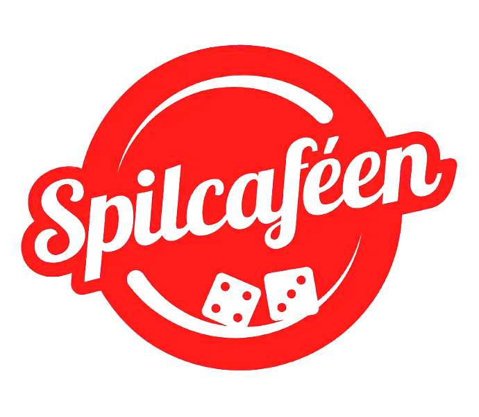
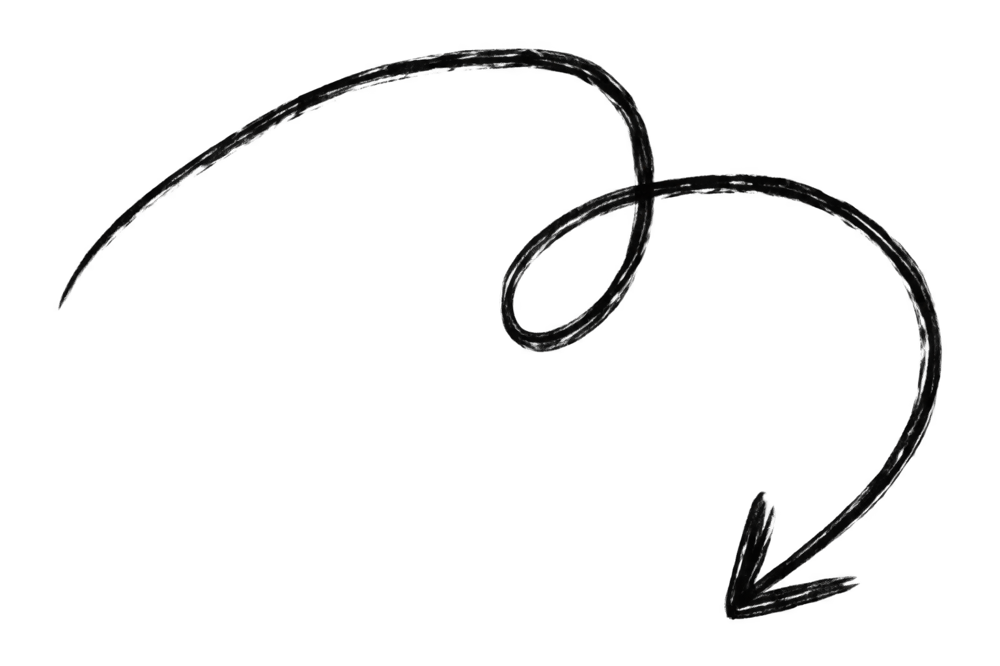
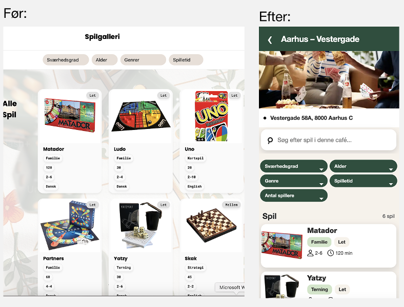
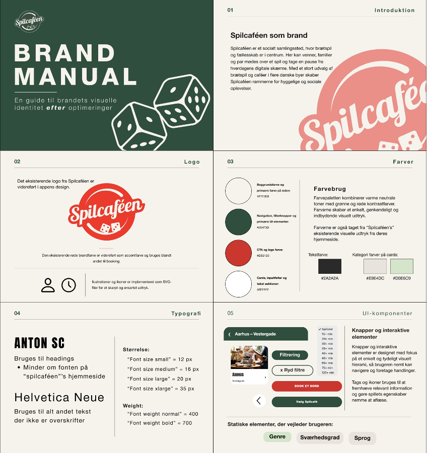
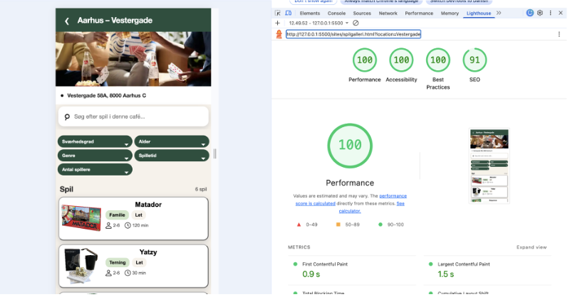

People, Planet & Prosperity
Hover for preview

Projektet tager udgangspunkt i en videreudvikling af Spilcaféens digitale løsning. Formålet har været at undersøge, hvordan appen kan optimeres, så den bliver mere tilgængelig, bæredygtig og overskuelig for brugeren, samtidig med at den understøtter Spilcaféens forretning.
Projektet er udviklet med fokus på People, Planet og Prosperity, hvor People handler om brugernes behov og tilgængelighed, Planet om at reducere løsningens dataforbrug og miljøpåvirkning, og Prosperity om at skabe en løsning, der understøtter Spilcaféens brand og forretningspotentiale.


Jeg har blandt andet overvejet, hvordan information kunne struktureres, så brugeren hurtigere kan finde et relevant spil, og hvordan filtrering og navigation kan mindske den kognitive belastning. Samtidig har jeg taget højde for brugere med forskellige behov gennem Inclusive Design og WCAG 2.2.
De visuelle ændringer er også blevet overvejet ud fra Spilcaféens eksisterende identitet. Appen er derfor blevet rebrandet, så den i højere grad hænger sammen med Spilcaféens hjemmeside, samtidig med at farver, typografi og UI-elementer er tilpasset med fokus på blandt andet kontrast og tilgængelighed.

Først analyserede jeg den eksisterende løsning gennem brugertests og værktøjer som Lighthouse, WAVE, Contrast Checker, EcoGrader og Website Carbon Calculator. Resultaterne blev brugt til at identificere de områder, der havde størst behov for forbedring.
Herefter arbejdede jeg med informationsarkitektur, userflow og visuel retning. Jeg anvendte blandt andet en lukket kortsortering til at strukturere spillets information og arbejdede med principper som Hick's Law, Jakob's Law og Fitt's Law.